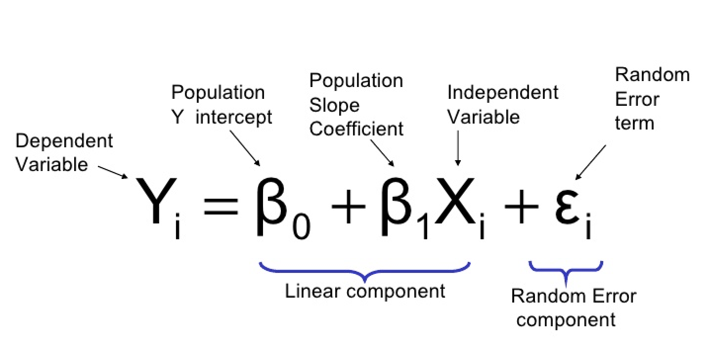

Линейная регрессия¶
Введение¶
В статистике линейная регрессия - это линейный подход к моделированию взаимосвязи между скалярным откликом (или зависимой переменной) и одной или несколькими независимыми переменными (или независимыми переменными). Случай одной независимой переменной называется простой линейной регрессией. Для нескольких независимых переменных процесс называется множественной линейной регрессией. Этот термин отличается от многомерной линейной регрессии, в которой прогнозируются несколько коррелированных зависимых переменных, а не одна скалярная переменная.

Модель простой линейной регрессии¶
Простейшая детерминированная математическая связь между двумя переменными \(x\) и \(y\) - это линейная зависимость: \(y = \beta_0 + \beta_1 x\).
Цель этого раздела - разработать эквивалентную линейную вероятностную модель.
Если две (случайные) переменные вероятностно связаны, то для фиксированного значения \(x\) существует неопределенность в значении второй переменной.
Итак, мы предполагаем \(Y = \beta_0 + \beta_1 x + \varepsilon\), где \(\varepsilon\) - случайная величина.
Две переменные связаны линейно «в среднем», если для фиксированного \(x\) фактическое значение Y отличается от его ожидаемого значения на случайную величину (т.е. имеется случайная ошибка).
Линейная вероятностная модель¶
Определение: (Модель простой линейной регрессии)
Существуют параметры \(\beta_0\), \(\beta_1\) и \(\sigma^2\), такие, что для любого фиксированного значения независимой переменной \(x\) зависимая переменная является случайной величиной, связанной с \(x\) через уравнение модели
{kind=link}
Величина \(\varepsilon\) в уравнении модели является «ошибкой» - случайной величиной, симметрично распределенной с
(пока никаких предположений о распределении \(\varepsilon\) не делалось)
\(\boldsymbol{X}\): независимая, предикторная или объясняющая переменная (обычно известная).
\(\boldsymbol{Y}\): зависимая переменная или переменная ответа. При фиксированном \(x\), \(Y\) будет случайной величиной.
\(\boldsymbol{\varepsilon}\): случайное отклонение или случайная ошибка. При фиксированном \(x\), \(\varepsilon\) будет случайной величиной.
\(\boldsymbol{\beta_0}\): среднее значение \(Y\), когда \(x\) равно нулю (пересечение истинной линии регрессии)
ожидаемое (среднее) изменение \(Y\), связанное с увеличением на 1 единицу значения \(x\). (наклон истинной линии регрессии)
Точки \((x_1, y_1),\dots,(x_n, y_n)\), полученные в результате \(n\) независимых наблюдений, затем будут разбросаны вокруг истинной линии регрессии:
{kind=link}
Оценка параметров модели¶
Значения \(\beta_0\), \(\beta_1\) и \(\sigma\) почти никогда не будут известны исследователю.
Вместо этого выборочные данные состоят из \(n\) наблюдаемых пар \((x_1, y_1),\dots,(x_n, y_n)\), по которым можно оценить параметры модели и саму истинную линию регрессии.
Предполагается, что данные (пары) были получены независимо друг от друга.
Линия «наилучшего соответствия» основана на принципе наименьших квадратов, который восходит к немецкому математику Гауссу (1777–1855):
Линия обеспечивает наилучшее соответствие данным, если сумма квадратов вертикальных расстояний (отклонений) от наблюдаемых точек до этой линии настолько мала, насколько это возможно.

Сумма квадратов вертикальных отклонений от точек \((x_1, y_1),\dots,(x_n, y_n)\)
Точечные оценки \(\beta_0\) и \(\beta_1\), обозначенные как и, называются оценками наименьших квадратов - это те значения, которые минимизируют \(f(b_0, b_1)\).
Подгоняемая линия регрессии или линия наименьших квадратов - это линия, уравнение которой имеет вид \(y=\hat{\beta}_{0}+\hat{\beta}_{1} x\).
Минимизирующие значения \(b_0\) и \(b_1\) находятся путем взятия частных производных от \(f(b_0, b_1)\) как по \(b_0\), так и по \(b_1\), приравнивания их обоих к нулю [аналогично \(f'(b)=0\) в одномерном исчислении] и решения уравнения
Оценка методом наименьших квадратов коэффициента наклона \(\beta_1\) истинной линии регрессии равна
Краткие формулы для числителя и знаменателя \(\hat{\beta_1}\):
Оценка методом наименьших квадратов точки пересечения \(b_0\) истинной линии регрессии равна
Использование¶
Представьте, что у нас есть следующие точки, и мы хотим построить линейную регрессионную модель:
X |
Y |
|---|---|
1.0 |
1.0 |
2.0 |
2.0 |
3.0 |
1.3 |
4.0 |
3.75 |
5.0 |
2.25 |
Тогда код будет выглядеть так:
// example_linear_regression.cpp
#include <iostream>
#include "../src/numerary.hpp" // Numerary library
using namespace std;
using namespace numerary;
/* The main function */
int main() {
const int N = 5; // Number of points
double *X = new double[N], *Y = new double[N], *predicted_kc = new double[2];
X[0] = 1.0; Y[0] = 1.0;
X[1] = 2.0; Y[1] = 2.0;
X[2] = 3.0; Y[2] = 1.3;
X[3] = 4.0; Y[3] = 3.75;
X[4] = 5.0; Y[4] = 2.25;
// Get predicted linear regression line
predicted_kc = Numerary::linear_regression(X, Y, N);
// Equation of regression line
cout << "y = " << predicted_kc[0] << "*x + " << predicted_kc[1] << endl;
// Reallocate memory
delete[] X;
delete[] Y;
delete[] predicted_kc;
return 0;
}